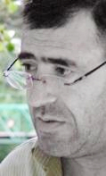

КРОЛИК МОЖЕТ РАССЛАБИТЬСЯ

Интервью Георгия Ваняна
- Было очень много надежд на встречу в Сочи. Почему она не привела к каким-либо результатам?
- Надежд? Что было до Сочи? Гладиаторские бои, активно комментируемые СМИ и социальных сетях, новости с Украины, в сопровождении слухов, которые распространялись по технологиям конца 80-х годов прошлого века - и все, и чиновники, и пропагандисты, и солдаты, и просто люди переживали внутри себя состояние «испуганного кролика», задаваясь вопросом: А вдруг это серьезно?
Когда было объявлено, что оба президента поедут на встречу с Путиным, уже процентов на 50 стало ясно, что войны не будет. Остальные 50 процентов уверенности, что «на этот раз пронесло» появилось сразу же после того, как наши президенты сели рядом с Путиным и посмотрели самбо («Самозащиту без оружия»).
И да, если кто-то из нас, живых надеялся остаться в живых и продолжать жить как жил, его надежды Путин оправдал – кролик может расслабиться. Вот такой вот имперский народный эпос у нас получился.
- Есть мнения, что Путин изменил свои взгляды на Армению на 180 градусов. Согласны с этим?
- Путин не может смотреть на Армению, под каким либо градусом, Армения сейчас в его орбите, грубо говоря, Армения - под ним. Другой вопрос, какие у нас, в Армении, и у армян вообще мнения на этот счет. Точнее, что говорят на этот счет эксперты и деятели, допущенные к микрофону. «Правоверные путинцы» не так активны сейчас на публичном поле Армении, потому что «независимо мыслящие» и «западники» делают их работу. Тиражируют всевозможные поверхностные факты «поворота» Путина, в тоже время сохраняется довлеющая чекистская модель – якобы армяне могут торговаться с Россией и «заставить» чтобы Путин (Горбачев, Ельцин, Хрущев, Сталин и все их предшественники), не отворачивался от них. При том, наклон этого поворота абсолютно не касается проблем суверенности, независимости Армении (это не важно), важно не допустить этого якобы наклона в сторону Азербайджана и Турции. В итоге – Азербайджан (Турция – покровитель) остается в статусе единственного врага. Так что путинцы в отпуске сейчас, за них работают «антипутинцы». И эта тенденция в Армении была всегда, просто сейчас она больше проявляется.
- Как Вы лично видите путь выхода из Карабахского кризиса? Есть ли он вообще?
- На Текалинском конкурсе речи, один молодой человек, Юра Акопян, лучше меня оформил мое видение. Он сказал: Российская империя создала Карабахский конфликт, но у армян и азербайджанцев есть шанс повернуть этот конфликт против той же империи.
Из кризиса выходят через переговоры. Для того чтобы начались переговоры нужно вывести карабахский конфликт из зоны влияния России, используя все возможные механизмы. В этом направлении, в направлении вывода конфликта на переговорный уровень – обе стороны могут и должны стать союзниками, и уже само урегулирование – будет делом техники.
В идеале обеим сторонам конфликта уже сегодня нужно определиться, что им нужно – война или переговоры, какое будущее они хотят обеспечить для своих стран. Мы не должны уповать на Евросоюз из-за того, что Путин нас обидел, предал, напугал. Это должен быть ценностный выбор, граждане этот выбор сделали, и если этого не видно, то только потому, что их периодически вводят в состояние «испуганного кролика». Как может нормальный человек посчитать выбор между войной и миром - выбором? Как может нормальный человек считать выбором - выбор между шантажом и переговорами? Но в нашей действительности такой выбор, к сожалению, считается политическим выбором. Все здравомыслящие люди, и армяне, и азербайджанцы, стараются сделать все возможное, чтобы влиять на ситуацию. В большой политике и на общественном уровне нужна позитивная ориентация на Евросоюз.
- Почему армянские СМИ тщательно скрывали свои потери на линии фронта?
- Сегодня средства массовой информации действуют на глобальном поле. И вывод такой: информация о потерях на линии фронта, даже в случае, когда она идет из официальных источников – противоречива. Только это и есть факт.
Жертвы на линии соприкосновения – это кремлевская бухгалтерия, здесь нет статистики, здесь только манипуляции.
- Армения находится в экономической блокаде. Существенного снизились субсидии. Стоит ли продолжать упорство в Карабахском вопросе?
- Армении был необходим, сейчас необходим и будет необходим переговорный процесс с Азербайджаном. Это - жизненная необходимость для Армении. С другой стороны, я не думаю, что тактика «брать врага на измор» сработает в пользу Азербайджана. Нигде в мире, тем более на постсоветском Южном Кавказе, в обозримом будущем не может быть «идеальных войн». А вне идеального варианта – это гуманитарная катастрофа, затяжной конфликт, во время которого возможно перекраивание границ, но в результате которого мы окажемся в некоем статус-кво того же качества, что и сейчас. При возобновлении конфликта нам придется забыть о независимости, демократии, прогрессе наших государств.
Информация, которой мы, я и Вы, владеем сегодня о содержании процесса под эгидой МГ, сродни информации о диверсиях и количестве жертв на линии фронта. Не ясно, кто именно, где именно, и на каком пункте «упорствует». Ясно только одно – лично Путин имеет рычаги. И все.
Нам надо, наконец, осознать, и в Армении, и в Азербайджане, что мы не должны ждать, не должны смотреть по сторонам, не должны жаловаться. Прежде всего, каждый из нас в отдельности, и наши государства, каждое в отдельности, должны утверждать человеческие ценности. Мы должны стараться повернуть, обернуть Карабахский конфликт так, чтобы он разрешился, наконец, а не оставался дубинкой, не оставался инструментом шантажа. Иначе, мы так и останемся с мечтой о «хорошем Путине», который все за нас сделает.
26-08-14
Данное интервью провел журналист V.G для газеты B.Y.. После получения ответов на вопросы, текст не прошел редакционную цензуру и не был допущен к публикации.
- Было очень много надежд на встречу в Сочи. Почему она не привела к каким-либо результатам?
- Надежд? Что было до Сочи? Гладиаторские бои, активно комментируемые СМИ и социальных сетях, новости с Украины, в сопровождении слухов, которые распространялись по технологиям конца 80-х годов прошлого века - и все, и чиновники, и пропагандисты, и солдаты, и просто люди переживали внутри себя состояние «испуганного кролика», задаваясь вопросом: А вдруг это серьезно?
Когда было объявлено, что оба президента поедут на встречу с Путиным, уже процентов на 50 стало ясно, что войны не будет. Остальные 50 процентов уверенности, что «на этот раз пронесло» появилось сразу же после того, как наши президенты сели рядом с Путиным и посмотрели самбо («Самозащиту без оружия»).
И да, если кто-то из нас, живых надеялся остаться в живых и продолжать жить как жил, его надежды Путин оправдал – кролик может расслабиться. Вот такой вот имперский народный эпос у нас получился.
- Есть мнения, что Путин изменил свои взгляды на Армению на 180 градусов. Согласны с этим?
- Путин не может смотреть на Армению, под каким либо градусом, Армения сейчас в его орбите, грубо говоря, Армения - под ним. Другой вопрос, какие у нас, в Армении, и у армян вообще мнения на этот счет. Точнее, что говорят на этот счет эксперты и деятели, допущенные к микрофону. «Правоверные путинцы» не так активны сейчас на публичном поле Армении, потому что «независимо мыслящие» и «западники» делают их работу. Тиражируют всевозможные поверхностные факты «поворота» Путина, в тоже время сохраняется довлеющая чекистская модель – якобы армяне могут торговаться с Россией и «заставить» чтобы Путин (Горбачев, Ельцин, Хрущев, Сталин и все их предшественники), не отворачивался от них. При том, наклон этого поворота абсолютно не касается проблем суверенности, независимости Армении (это не важно), важно не допустить этого якобы наклона в сторону Азербайджана и Турции. В итоге – Азербайджан (Турция – покровитель) остается в статусе единственного врага. Так что путинцы в отпуске сейчас, за них работают «антипутинцы». И эта тенденция в Армении была всегда, просто сейчас она больше проявляется.
- Как Вы лично видите путь выхода из Карабахского кризиса? Есть ли он вообще?
- На Текалинском конкурсе речи, один молодой человек, Юра Акопян, лучше меня оформил мое видение. Он сказал: Российская империя создала Карабахский конфликт, но у армян и азербайджанцев есть шанс повернуть этот конфликт против той же империи.
Из кризиса выходят через переговоры. Для того чтобы начались переговоры нужно вывести карабахский конфликт из зоны влияния России, используя все возможные механизмы. В этом направлении, в направлении вывода конфликта на переговорный уровень – обе стороны могут и должны стать союзниками, и уже само урегулирование – будет делом техники.
В идеале обеим сторонам конфликта уже сегодня нужно определиться, что им нужно – война или переговоры, какое будущее они хотят обеспечить для своих стран. Мы не должны уповать на Евросоюз из-за того, что Путин нас обидел, предал, напугал. Это должен быть ценностный выбор, граждане этот выбор сделали, и если этого не видно, то только потому, что их периодически вводят в состояние «испуганного кролика». Как может нормальный человек посчитать выбор между войной и миром - выбором? Как может нормальный человек считать выбором - выбор между шантажом и переговорами? Но в нашей действительности такой выбор, к сожалению, считается политическим выбором. Все здравомыслящие люди, и армяне, и азербайджанцы, стараются сделать все возможное, чтобы влиять на ситуацию. В большой политике и на общественном уровне нужна позитивная ориентация на Евросоюз.
- Почему армянские СМИ тщательно скрывали свои потери на линии фронта?
- Сегодня средства массовой информации действуют на глобальном поле. И вывод такой: информация о потерях на линии фронта, даже в случае, когда она идет из официальных источников – противоречива. Только это и есть факт.
Жертвы на линии соприкосновения – это кремлевская бухгалтерия, здесь нет статистики, здесь только манипуляции.
- Армения находится в экономической блокаде. Существенного снизились субсидии. Стоит ли продолжать упорство в Карабахском вопросе?
- Армении был необходим, сейчас необходим и будет необходим переговорный процесс с Азербайджаном. Это - жизненная необходимость для Армении. С другой стороны, я не думаю, что тактика «брать врага на измор» сработает в пользу Азербайджана. Нигде в мире, тем более на постсоветском Южном Кавказе, в обозримом будущем не может быть «идеальных войн». А вне идеального варианта – это гуманитарная катастрофа, затяжной конфликт, во время которого возможно перекраивание границ, но в результате которого мы окажемся в некоем статус-кво того же качества, что и сейчас. При возобновлении конфликта нам придется забыть о независимости, демократии, прогрессе наших государств.
Информация, которой мы, я и Вы, владеем сегодня о содержании процесса под эгидой МГ, сродни информации о диверсиях и количестве жертв на линии фронта. Не ясно, кто именно, где именно, и на каком пункте «упорствует». Ясно только одно – лично Путин имеет рычаги. И все.
Нам надо, наконец, осознать, и в Армении, и в Азербайджане, что мы не должны ждать, не должны смотреть по сторонам, не должны жаловаться. Прежде всего, каждый из нас в отдельности, и наши государства, каждое в отдельности, должны утверждать человеческие ценности. Мы должны стараться повернуть, обернуть Карабахский конфликт так, чтобы он разрешился, наконец, а не оставался дубинкой, не оставался инструментом шантажа. Иначе, мы так и останемся с мечтой о «хорошем Путине», который все за нас сделает.
26-08-14
Кавказский Центр Миротворческих Инициатив

© Ассоциация Текали - info@southcaucasus.com